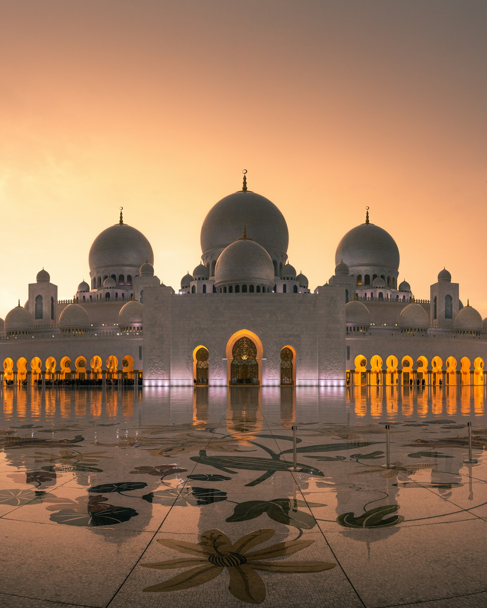

610-632 CE
Prophetic era
Revelation of the Qur'an in Makkah and Madinah. The Hijrah (622 CE / 1 AH) established a community in Yathrib, later called Madinah.

Chronicle
Periods, communities, and the making of a world civilization
Islamic history is both a religious story and a civilizational one. It includes the life of Prophet Muhammad ﷺ, the growth of the early community (ummah), the development of law and scholarship, and the arts of cities from Cordoba to Cairo, Istanbul, Delhi, and beyond. Dates below use the Common Era for clarity, with Hijri years noted where they are especially well known.
This page offers a high-level educational survey. Dynastic politics were complex; many regions had local histories. Where scripture or hadith is relevant, sources are named rather than paraphrased as invented quotations.
Revelation of the Qur'an in Makkah and Madinah. The Hijrah (622 CE / 1 AH) established a community in Yathrib, later called Madinah.
The period of Abu Bakr, Umar, Uthman, and Ali (may Allah be pleased with them), marked by compilation of the Qur'an into a written codex and rapid political change.
Administration centered on Damascus; Arabic became a language of empire. Architecture and urban planning expanded, including works in Greater Syria and North Africa.
Baghdad became a major center of learning. Translation movements, hadith sciences, fiqh schools, and sciences of nature developed in many cities, not only the capital.
Al-Andalus, the Maghrib, Fatimid and later Mamluk Egypt, Ottoman lands, Persia, and South and Southeast Asia each formed distinctive cultures while sharing core religious texts.
Colonial encounters, reform movements, nation-states, and global Muslim communities reshaped institutions while the Qur'an, prayer, and pilgrimage remained central.
Selected milestones presented as a clean timeline. Descriptions stay concise and avoid legendary embellishment.
c. 570 CE
Traditional biographical literature (sira) places his birth in the Year of the Elephant. Exact dating is discussed by historians; the traditional narrative remains central to Muslim memory.
610 CE
According to the sira and hadith literature, the first verses revealed were from Surah al-'Alaq (Qur'an 96:1-5), received in the cave of Hira.
622 CE / 1 AH
Migration from Makkah to Madinah. This event became the epoch of the Islamic calendar. The Constitution of Madinah, preserved in early sources, describes a multi-tribal civic agreement.
630 CE
The peaceful opening of Makkah is a major episode in the sira. The Kaaba was rededicated to the worship of God alone, according to Muslim historical tradition.
632 CE
The Farewell Sermon is reported in hadith collections with variant wordings. After his passing, leadership passed to Abu Bakr as-Siddiq (may Allah be pleased with him).
c. 650s CE
During the caliphate of Uthman ibn Affan (may Allah be pleased with him), a standardized written copy was produced and other personal copies were withdrawn, as reported in Sahih al-Bukhari and other early sources.
711 CE onward
Muslim rule in parts of the Iberian Peninsula lasted for centuries and left a lasting architectural and intellectual legacy, including Cordoba and later Granada.
1258 CE
The Mongol conquest ended the classical Abbasid capital's political role. Learning continued in other centers, including Cairo, Damascus, and later Ottoman cities.
1453 CE
The conversion of Hagia Sophia into a mosque (later a museum, then a mosque again in modern times) is one of the most visible architectural chapters of Ottoman history.